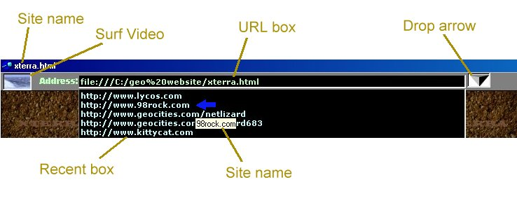

URL
box:
Type in the URL of the desired website. Pressing enter loads the website.
You can use autocomplete to fill in the 'http://www.' and '.com'.
Example: type in 'yahoo' and press CTRL and ENTER at the same time. The
URL becomes 'http://www.yahoo.com'. Right clicking the mouse allows you
to copy and paste text in the URL box.
Surf
video:
When the surf video is playing, it indicates that a download is in
progress.
Drop Arrow:
Shows or hides the Recent Box.
Recent
Box:
The recent box lists recently accessed websites. Clicking on a URL
will load the website. The URL is moved to the top of the recent box list.
Site
Name:
The name of the website pointed to by the mouse in the recent box is
shown in a floating box. The site name in the title bar is the name of
the current web site.